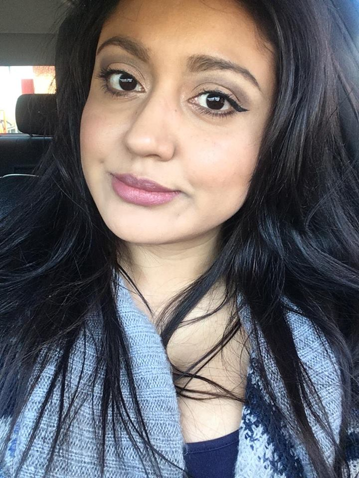

About Me
My name is Mayra Lopez. I'm currently in coding bootcamp. I'm beyond excited for what the furture holds for me after I finished the program. I'm hoping to be able to start as a Junior Web Developer and continue to grow my skills and knowledge everyday. I've been interested in coding for a while and I'm glad I finally took the steps needed to start learning how to code.
For a living I'm currenlty an the admistrator and manager for CBD infusionz. How am I both you may ask? I don't know myself but those are the tittles that were given to me. I also stream video games on twitch part time! I absolutly love playing video games. My all time favorite game is Age of Empires II: Conquerors Exansion. I participate in many tournamnets however I've only won one. Back in September 2017 I managed to win the "Beer Princess" title as well as the $400 prize money. Lask weekend I also managed to host my very first tournament! It's a lot of fun and I love the gaming community. Although I'm pretty good in real time strategy games I'm a horrible first person shooter. I've still haven't managed to get my first kill in Fortnite! Due to wanting to fix my life by being financially stable (Yes, I do get donations through twitch and as an affiliate I get a cut from my subscribers. However; I'm not popular and living from video games is not a possibility for me as I'm also not getting any younger *Cries inside* I'm currently not streaming daily anymore. So for now my gaming career is on hold. I am sad though beacuse I play Age of Empires II: Conquerors Expansion on Voobly and my rating finally hit 1750 which is pretty good. I know that without daily play and practice I will lose my rating. However; I know that this is way more important than an awesome game.